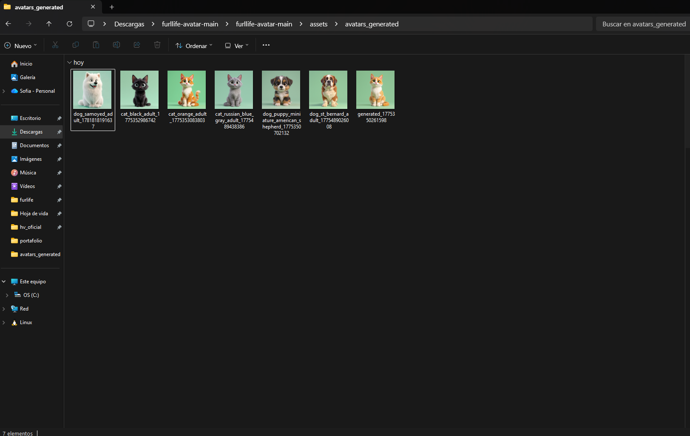
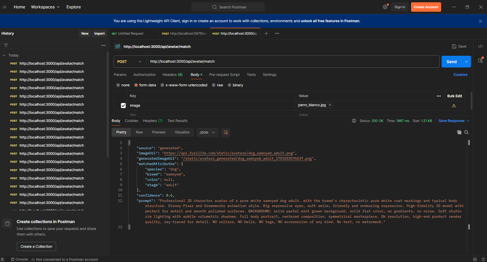
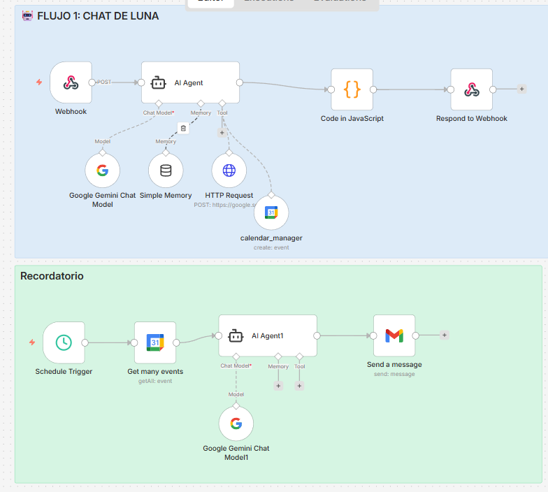
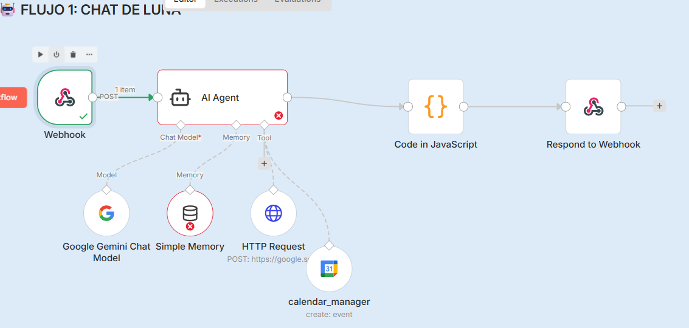
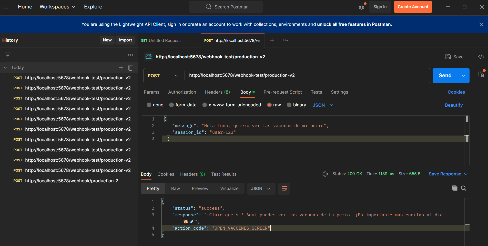

WordPress + Crocoblock
Sitios interactivos con tipos de contenido personalizados, lógica dinámica y arquitectura escalable lista para producción.
Portafolio · 2026
› WordPress Developer
Diseño soluciones digitales que combinan automatización con n8n, inteligencia artificial y WordPress profesional para acelerar negocios.
Soy Tecnóloga en Análisis y Desarrollo de Sistemas y estudiante de Ingeniería en Sistemas y Telecomunicaciones (octavo semestre, Universidad de Manizales). Construyo sitios WordPress, automatizo procesos con n8n y aplico IA para que los equipos puedan enfocarse en lo que realmente importa.
Empecé optimizando contenido y posicionamiento SEO en Creative Studios SAS. Esa raíz analítica me llevó al frontend y a WordPress; en OrbidI implementé sitios con Crocoblock, administré hosting con cPanel, ejecuté migraciones críticas y diseñé automatizaciones con n8n que integran IA y APIs.
Tarjetas accionables, no abstracciones. Cada servicio entrega resultados medibles.
Sitios interactivos con tipos de contenido personalizados, lógica dinámica y arquitectura escalable lista para producción.
Flujos low-code que clasifican correos, interceptan excepciones del CMS y orquestan procesos de negocio sin fricción.
Integración de modelos generativos a procesos reales: contenido, clasificación, asistentes y análisis con Python.
Auditorías de rendimiento e indexabilidad con Screaming Frog, Ahrefs y Semrush. Schema, Core Web Vitals y arquitectura clara.
Gestión integral del entorno: cPanel, zonas DNS (A, CNAME, TXT) y migraciones críticas con cero pérdida de datos.
Velocidad, estructura semántica, accesibilidad y conversión. Cada milisegundo trabajando a favor del negocio.
Conecto WordPress, n8n, CRMs y modelos de IA con APIs REST claras, seguras y bien documentadas.
Indicadores claros y reportes automatizados con Python y Google Analytics que cuentan la historia detrás de los números.
Una selección curada de proyectos donde el código, la IA y el diseño trabajan juntos.
Sistema inteligente construido con n8n e IA para gestionar grandes volúmenes de correos: clasifica, prioriza, resume y crea tareas automáticamente.
Liberar horas de bandeja de entrada y convertir cada correo en una acción concreta.
Diseñar prompts confiables, manejar contexto largo y orquestar múltiples servicios sin perder trazabilidad.
Reducción significativa del tiempo dedicado a triage de correo y mayor consistencia en las respuestas.
Plataforma SaaS potenciada con IA que automatiza la creación inicial de sitios WordPress: sitemap, wireframes, SEO y contenido en minutos.
Acortar de semanas a horas el arranque de un sitio WordPress profesional.
Mantener una identidad coherente, conectar IA generativa con la REST API y dejar el sitio editable sin fricción.
Flujo end-to-end que entrega un sitio inicial listo para refinar, con SEO base y contenido coherente.

API REST en Node.js / Express que convierte la foto real de una mascota en un avatar ilustrado tipo Pixar / Dreamworks. Combina Google Cloud Vision para detectar especie, raza, color y etapa de vida, un catálogo local con matching difuso (Levenshtein) y un fallback de generación con FLUX vía Pollinations.ai.
{species, breed, color, stage} con sinónimos y blocklist de contextoassets/avatars/; si confianza > 0.80 responde sin llamar a IAEntregar avatares estilizados y consistentes que reflejen los rasgos reales de cada mascota en segundos, sin pagar un ilustrador ni intervención manual.
Resolución de raza por capas (exacta → substring → keywords → fallback a "criollo"), lógica dedicada para gatos naranjas (branding del producto), logs trazables por etapa ([Vision], [Match], [Cache]) y diseño para Oracle Cloud con load balancer y health check.
Endpoint POST /api/avatar/match devuelve source, imageUrl, matchedAttributes y confidence. Cada generación enriquece el catálogo, reduciendo costos y tiempos de respuesta futuros.
assets/avatars/
/api/avatar/match
Workflow en n8n que expone un asistente conversacional con Google Gemini y un sistema proactivo de recordatorios diarios para citas veterinarias del día siguiente.
session_idDar al vertical de mascotas un asistente conversacional barato y rápido que además avise proactivamente al dueño cuando su mascota tiene cita al día siguiente.
Desacoplar IA y frontend mediante action codes estables, mantener memoria por usuario y orquestar dos flujos (reactivo + proactivo) en el mismo canvas sin acoplarlos.
Gemini Flash por latencia y costo, memoria por session_id y separación del JSON del texto en un nodo de código para que la app reaccione a códigos estables aunque el modelo varíe su redacción.


action_codeApp de transporte público para Manizales: permite consultar las rutas de buses de la ciudad de forma clara y rápida. Disponible en App Store, Google Play y web.
Facilitar la movilidad en Manizales dando a las personas una forma sencilla de encontrar la ruta de bus que necesitan.
Aplicación multiplataforma publicada en App Store y Google Play, con sitio web informativo.
Reservando espacio para lo que viene.
Pipelines internos para escalar operaciones con IA y orquestación n8n.
Visualización en tiempo real para equipos de marketing y producto.
Agente especializado por industria, con memoria y herramientas propias.
Una idea que mezcla automatización y contenido para creadores.
Implementación a medida en proceso. Pronto será publicada aquí.
Universidad Autónoma de Manizales. Bases sólidas de programación, lógica y sistemas.
Universidad Autónoma de Manizales. Análisis, programación y desarrollo de sistemas de información.
Auditorías técnicas con Screaming Frog, Ahrefs y Semrush. Optimización de velocidad y estructura. Frontend con HTML, CSS y JavaScript. Administración de WordPress y Wix.
Fundamentos de IA, desarrollo de modelos básicos y análisis de datos con Python.
WordPress + Crocoblock en producción. Administración de hosting con cPanel, migraciones críticas (cero pérdida de datos), zonas DNS y registros A/CNAME/TXT. Flujos n8n para interceptar excepciones del CMS y clasificar correos automáticamente.
Octavo semestre. Profundizando en arquitectura de software, redes, datos e ingeniería para construir productos digitales sólidos y escalables.
Credenciales oficiales que respaldan mi aprendizaje con evidencia comprobable.
MinTIC · Unión Temporal IU Training — Universidad de Antioquia, Universidad de Caldas y Ubicua Technology.
¿Una idea? ¿Una integración? ¿Una colaboración? Escríbeme y te respondo personalmente.